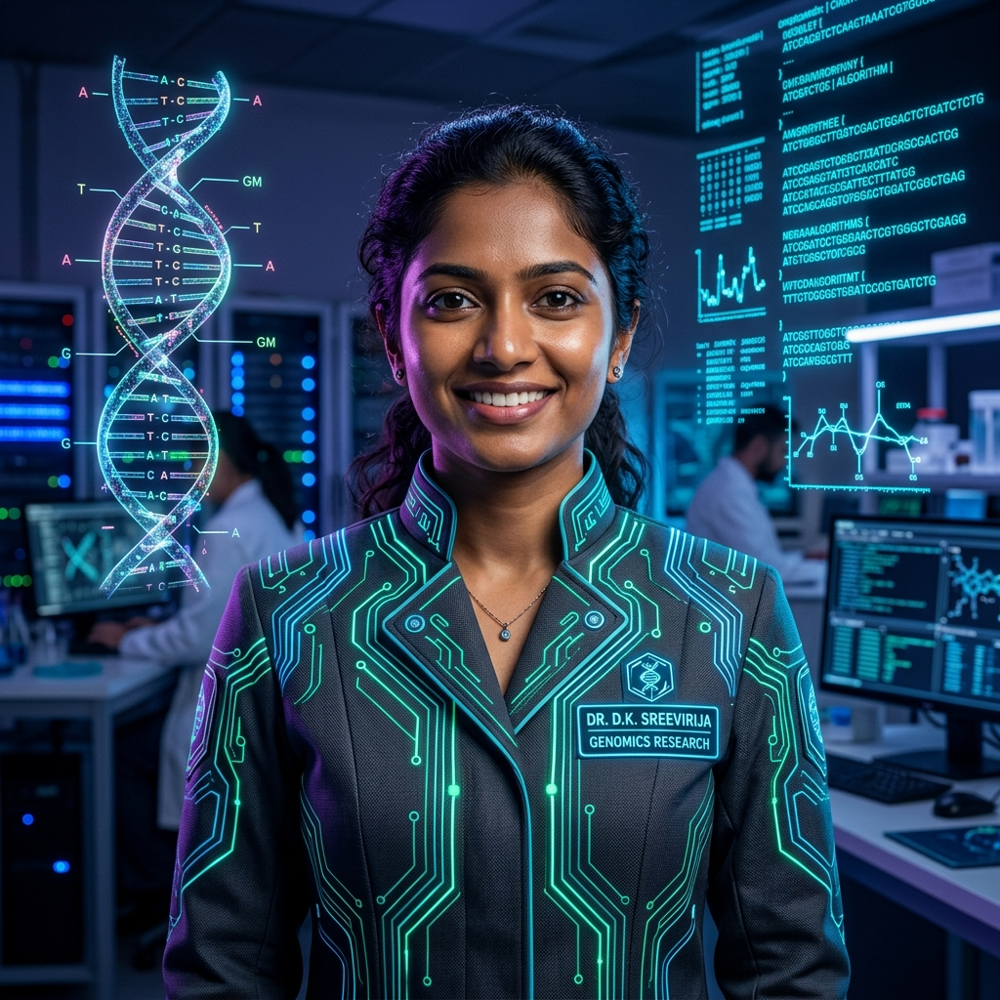

Hello! I am D.K. Sreevirija. I engineer computational solutions at the intersection of genomic sequences, machine learning algorithms, and biotechnology. Transforming biological data into predictive models and reproducible bioinformatics pipelines.

Test computational biology tenets directly in your browser. Transcribe sequences, simulate oncogenic machine learning classifiers, and execute queries in the in-silico CLI.
How biological phenomena in the cell are transformed into digital strings, structured feature matrices, and predictive machine learning models. Click any node to inspect the computational bridge:
Understanding DNA, RNA, proteins, gel electrophoresis, PCR amplification, and the raw biochemistry of cellular life.
Converting biochemical strands into digital files: FASTQ base-calling, Phred quality scoring, and short-read alignment.
Parsing raw biological datasets with Python, NumPy matrices, and Pandas dataframes. Handling missing reads and normalization.
Training classification and regression models. Dimensionality reduction (PCA, t-SNE) and feature selection for oncogene detection.
Applying Biopython, local BLAST sequence alignments, PDB 3D macromolecular coordinate analysis, and folding heuristics.
Deploying interactive diagnostic prototypes, reproducible pipelines, and intelligent tools to accelerate precision medicine.
All computational bioinformatics stems from the double helix. Living cells store hereditary information across adenine (A), thymine (T), guanine (G), and cytosine (C). Before any algorithm can predict disease phenotypes, we must comprehend how wet-lab extraction, PCR amplification, and enzymic cleavage affect the biological sample.
Engineered experiments spanning machine-learning classification, web diagnostic interfaces, protein profiling, and bioinformatics algorithms:
A high-dimensional microarray data project focused on preprocessing, variance thresholding, and supervised classification across thousands of expression markers.
A lightweight full-stack demonstration combining Django backend services with Google Teachable Machine to illustrate real-time computer vision inference workflows.
Algorithmic physicochemical feature extraction pipeline. Computes amino-acid hydropathy scores, isoelectric points, and Chou-Fasman secondary structure propensities.
Automated SpCas9 PAM site recognition (`NGG`) across eukaryotic exon targets, calculating on-target cleavage efficiency scores and mismatch penalties.
Dimensionality reduction and unsupervised clustering (K-Means & DBSCAN) pipeline for resolving cell-type heterogeneity across thousands of single-cell RNA-seq libraries.
A calibrated synthesis of programming languages, machine learning frameworks, computational biology software, and wet-lab principles:
Tracing the educational trajectory and research internships forging my career in computational biology:
Engineered machine learning pipelines focusing on supervised classification, high-dimensional biological data preprocessing, robust feature selection, and model evaluation metrics (Confusion Matrix, ROC-AUC). Developed a full-stack interactive demonstration integrating Django with Teachable Machine prototypes and maintained version-controlled team collaboration via GitHub.
Rigorous 5-year integrated curriculum synchronizing core molecular biotechnology, genetic engineering, recombinant DNA technology, and microbiology with advanced computational sciences — Python programming, biological sequence analysis, structural biology, and machine learning.
Intensive training in Botany, Zoology, Physics, and Chemistry. Developed deep foundational curiosity for cellular architecture, enzymology, and mathematical reasoning in living systems.
Graduated with stellar academic performance in science and mathematics, planting the seeds for scientific research and problem-solving.
Open to bioinformatics research collaborations, AI/ML internships, computational biology projects, and academic discussions. Let's turn biological data into actionable discoveries.